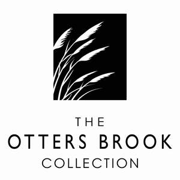

Trade Mark Journal No.2025/028 11 July 2025
UK00004225639 27 June 2025 (20,21,24,26,27,28)
Mark 1

Mark 2

Mark 3

- Class 20
- Furniture; Furniture and furnishings; Upholstered furniture; Metal furniture and furniture for camping; Dressers [furniture]; Cushions [furniture]; Wooden furniture; Credenzas [furniture]; Furniture cabinets; Cabinets [furniture]; Patio furniture; Recliners [furniture]; Bentwood furniture; Washstands [furniture]; Pouffes [furniture]; Kitchen furniture; Cupboards being furniture; Bedroom furniture; Outdoor furniture; Nursery furniture; Drawers for furniture; Benches [furniture]; Household furniture; Bathroom furniture; Garden furniture; Lawn furniture; Desks [furniture]; Furniture shelves; Shelves [furniture]; Panelling for furniture; Furniture for kitchens; Kitchen dressers [furniture]; Wooden shelving [furniture]; Leather furniture; Slatted furniture; Chairs being office furniture; Stationery cabinets [furniture]; Shop furniture; Tables [furniture]; Seating furniture; Furniture moldings; Office furniture; Furniture (Office -); Indoor furniture; Furniture for bathrooms; Furniture for storage; Storage furniture; Consignment shelving [furniture]; Lounge furniture; Bamboo furniture; Furniture racks; Racks [furniture]; Furniture of metal; Metal furniture; Trolleys [furniture]; Furniture parts; Furniture partitions; Furniture frames; Arbours [furniture]; Furniture chests; Pet furniture; Lockers [furniture]; Pedestals [furniture]; Furniture for vivariums; Furniture partitions of wood; Furniture (Partitions of wood for -); Partitions of wood for furniture; Consoles [furniture]; Furniture for offices; Antique style furniture; Furniture for conservatories; Furniture for shops; Doors for furniture; Furniture doors; Transformable furniture; Mirrors [furniture]; Stackable furniture; Furniture for washrooms; Trestles [furniture]; Glass furniture; Metal cabinets [furniture]; Inflatable furniture; Furniture (Inflatable -); Wooden racks [furniture]; Garden furniture manufactured from wood; Fireguards [furniture]; Seats [furniture]; Furniture for children; Joints for furniture; Furniture for caravans; Metal shelving [furniture]; Modular bathroom furniture; Shelves being nursery furniture; Computer furniture; Furniture for saunas; Legs for furniture; Drawers [furniture parts]; Drawers as furniture parts; Furniture for camping; Camping furniture; Screens [furniture]; Furniture screens; Cane furniture; Domestic furniture; Metal office furniture; Countertops [furniture parts]; Furniture for babies.
- Class 21
- Household utensils; Household containers; Trays [household]; Household gloves; Squeegees [for household use]; Household or kitchen containers; Household or kitchen utensils; Dishes [household utensils]; Graters [household utensils]; Glassware for household purposes; Utensils for household purposes; Sifters [household utensils]; Graters for household purposes; Graters for household use; Loofahs for household purposes; Ceramics for household purposes; Colanders for household purposes; Colanders for household use; Sieves [household utensils]; Nebulizers for household use; Brushes for household purposes; Sponges for household purposes; Baskets for household purposes; Cages for household pets; Pets (Cages for household -); Containers for household use; Strainers for household use; Laundry balls for use as household utensils; Containers for household or kitchen use; Buckets for household use; Squeegees for household purposes; Jars for household use; Laundry bins for household purposes; Non-electric food blenders [for household purposes]; Trays for household purposes; Brushes for household use; Gloves for household purposes; Graters [non-electric household utensils]; Strainers for household purposes; Blenders, non-electric, for household purposes; Droppers for household purposes; Atomisers for household use; Bins for household refuse; Household gloves for cleaning purposes; Scrapers for household purposes; Laundry baskets for household purposes; Laundry sorters for household purposes; Sieves [for household purposes]; Sieves for household purposes; Household containers for storing pet food; Laundry sorters for household use; Non-electric food mixers [for household purposes]; All-purpose portable household containers; Disposable lids for household containers; Dumpling moulds for household use.
- Class 24
- Coverings for furniture; Fabrics for manufacturing garden furniture; Furniture coverings of textile; Coverings (Furniture -) of textile; Coverings of plastics for furniture.
- Class 26
- Fabric appliques [haberdashery]; Fabric appliques; Silk ribbons; Velvet ribbons; Silk flowers.
- Class 27
- Carpets; Carpets, rugs and mats; Carpets [textile]; Carpeting; Moquettes [carpets]; Carpet tiles; Tiles (Carpet -); Carpet tiles made of textiles; Rugs; Carpet tiles for covering floors; Rugs [mats]; Bathroom tiles [carpet]; Rugs (Floor -); Hand made woollen carpets; Fur rugs; Floor tiles made of carpet; Bathroom rugs; Rugs (Door -); Rugs for animals; Oriental non-woven rugs (mosen); Prayer rugs.
- Class 28
- Doll furniture; Toy furniture; Doll house furniture; Furniture for doll houses.
Festive Productions Limited